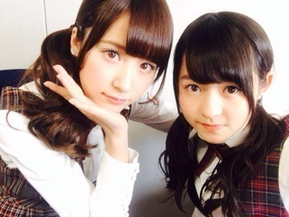
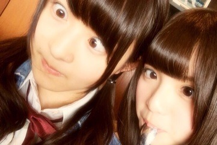

| 2014/04 03 Thu | 張り切って悩む。560 回目 |
昨日8thシングル
『気づいたら片想い』発売され、
なんと初日1位を獲得しました！
ありがとうございます！
そんな発売日に
美彩と優里と飛鳥と私の4人で
楽天koboスタジアム宮城
「東北楽天ゴールデンイーグルスVSオリックス・バファローズ戦」
に出演しました！！

最初トークショーに出させていただき、
そのあとは佐藤弘道さん、子供達と
一緒にイーグルぐるぐる体操を
スタジアムの真ん中で踊りました！

その他に
ラジオ、スタジアムMCも！
貴重な体験ができて嬉しかった><
スタジアム中に自分の声が
響いてたんだけど、
元気いっぱいできた♪
来てくださったファンのみなさん
ありがとうございました！！
結果負けてしまったけど、
選手を生で見て勇気を貰いました。
松井裕樹選手が同い年と
知って驚きました。
強い刺激をもらいました！
これからも楽天イーグルス
応援してます！！
13日のアンダーライブ楽しみ♪
ああああああ
それにしても
牛タン美味だったなあああああ

ぺろり

ここからは8th特典映像について！
◇Type-A 「Creator's Etude」
三木聡監督 ダルマの世界
すごい濃いメンツ
だったので大変でした。
他のメンバーが見てる中
やったから極度に緊張してたけど、
三木監督のシュールな世界観が
出ている？かな？
◇Type-C「乃木坂の4人」
さゆりんなーちゃんひなちま私に
スポットを当てたドキュメンタリー
ひとりで静かに映像を見ました。
熊坂監督に思っていることを
すぐ見抜かれてしまい
取材を怖がることもありましたが、
自分に足りないことを
遠回しに指摘してくださる
監督の優しさや、
みんなのそれぞれの思い、
約一ヶ月間のことを思い返しながら
見ていたら涙が出てきました...
あと、改めて感じたのは
自分は本当に鬱陶しいやつだなと。
そういう自分があまりにも情けなくて
泣くことがたくさんありました。
なんでできないんだろうと
自分にいらいらしてしまう
こともありました。
余裕の無さとか。
みんななんでこんなに
良い子なんだろう
その分自分は言いたいことを
何も考えず言ってしまうことがあって
反省することがたくさんあります。
やっぱり乃木坂って
すごい子ばかりです。
みんなに追いつきたいって思うし、
一人ひとりを尊敬しています。
本当に、このメンバーの中に
いれることが幸せだと感じました。
いろんな感情に溢れていました。
喜怒哀楽以上の深い感情。
なんと言ったらわからない
気持ちにもなりました。
初めてでした。
様々な課題を出されて
何度も苦戦しましたが、
そこから湧き出る感情が
今まで感じたことが
なかったものでした。
こんな自分がいたんだ
って気づいた時、なぜかそれが
すごく心地良くて、楽しかった。
監督にいろんなことを
教えられました。
ありがとうございました。
このドキュメンタリーを見て
良い意味でも悪い意味でも
私の印象が変わるかもしれません。
でもそれは私に間違いありません。
乃木坂46というグループを
もっともっと知りたい応援したい
と思ってくれたらいいな。
ぜひ見てください！
と、こんな感じで今回のシングルは
見応えたっぷりです！
長文失礼しました！
CD特典のアンダースペシャルライブ
5月3日の渋谷TSUTAYA O-EASTの
抽選が早くも4月7日に締め切ります。
応募はお早めにっ
それでは
8thも
よろしくお願い

しますしますしますしますしますしますしますしますしますします三(卍^o^)卍ﾄﾞｩﾙﾙﾙﾙ三(卍^o^)卍ﾄﾞｩﾙﾙﾙﾙ三(卍^o^)卍ﾄﾞｩﾙﾙﾙﾙ三(卍^o^)卍ﾄﾞｩﾙﾙﾙﾙ
まりか
コメント(592)
2014/04/03 14:42